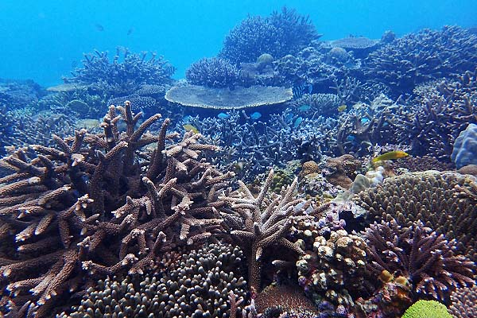

奄美大島、徳之島、沖縄島北部及び西表島
亜熱帯の植物が生い茂る東洋の”ガラパゴス”
『奄美大島、徳之島、沖縄島北部及び西表島』

元々ユーラシア大陸ともつながっていた地域だが、海面上昇などの地殻変動を起こし、大陸と離れたりくっついたりしながら現在の形となり、島に残った生物は独自の進化を遂げている。
奄美大島における生物多様性の高さ、固有種の多さは際立っている。
奄美大島が位置する場所は、気象条件において生物地理区の境界線「渡瀬ライン」が位置しており、生物生息域の北限と南限、両方の境目となっている。
これによって多様な生物が生存する稀有の島となっており、国土の面積の0.2％に満たない奄美大島において、国内全体の生物種の約13％が確認されている。
マングローブカヤック
島全体に亜熱帯のジャングルが広がる西表島。広大なマングローブ林の中、のんびりと幻想的な景色を眺めることができるカヤックツアーは、1年を通して大人気！
水牛車
西表島の北東部から約400mの場所にある由布島は、南国情緒漂うのんびりとした島。西表島からは、水牛車で海を渡って行くことができる！
ハートロック
「ハートロック」は、奄美大島にあるパワースポット。自然にできた潮溜まりがハートの形をしており、外国人にも人気のあるスポット！
星空ナイトツアー
西表石垣国立公園は、2018年に日本初の「星空保護区」に認定された場所。世界トップレベルの星空を見られる、そんな機会を逃す手はないですよね！